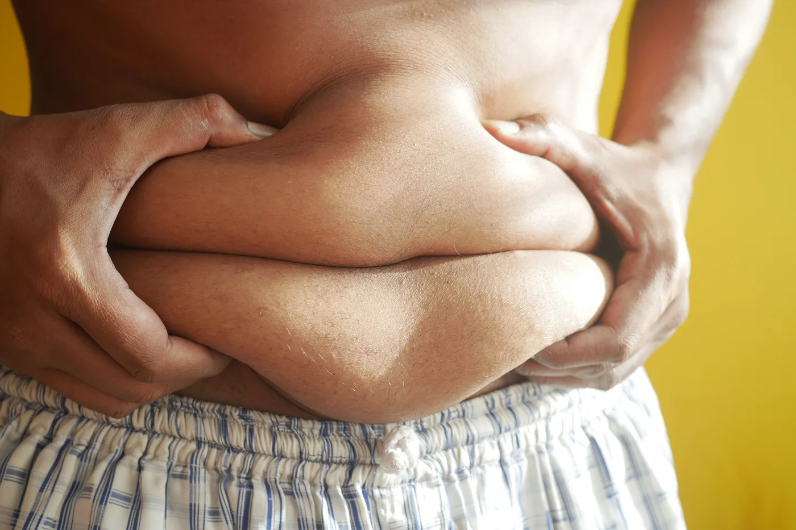
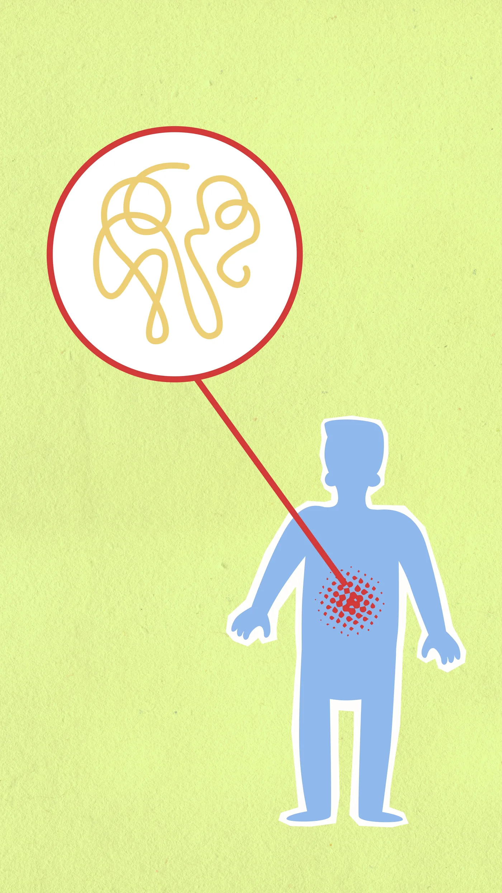

Você faz abdominal todos os dias e a barriga continua lá?

Essa é uma das maiores frustrações de quem está tentando emagrecer.
Você melhora a alimentação, começa a treinar, faz séries intermináveis de abdominais e, mesmo assim, a gordura da barriga parece ser a última a ir embora.
É comum surgir a sensação de que "alguma coisa está errada". Mas, na maioria das vezes, o problema não está no esforço. Está na expectativa.
Ao contrário do que muitos anúncios prometem, não existe exercício, chá, suplemento ou alimento capaz de eliminar gordura apenas da região abdominal. A perda de gordura acontece de forma global e depende de diversos fatores, como alimentação, atividade física, qualidade do sono, estresse e características individuais.
A boa notícia é que existem estratégias comprovadas pela ciência para reduzir a gordura corporal — incluindo a abdominal — de forma saudável e sustentável.
É possível perder gordura apenas da barriga?
Essa é, provavelmente, a dúvida mais comum sobre emagrecimento. A resposta curta é: não.
Nosso corpo não escolhe de onde vai retirar gordura com base no exercício que fazemos. Isso significa que fazer centenas de abdominais por dia fortalece os músculos da região, mas não faz o organismo utilizar especificamente a gordura localizada na barriga como fonte de energia.
A distribuição da gordura corporal é determinada principalmente por fatores genéticos, hormonais, idade, sexo e estilo de vida. Por isso, algumas pessoas percebem primeiro mudanças no rosto, outras nos braços ou nas pernas, enquanto a região abdominal costuma demorar mais para responder.
Embora isso possa ser frustrante, entender esse processo ajuda a evitar falsas promessas e focar no que realmente funciona.
Por que a gordura abdominal merece atenção?
Muitas pessoas associam a gordura abdominal apenas à estética. Mas existe outro motivo importante para cuidar dessa região.
Parte da gordura acumulada no abdômen é chamada de gordura visceral. Diferentemente da gordura localizada logo abaixo da pele, ela se acumula ao redor de órgãos como fígado, intestino e pâncreas.
Em excesso, esse tipo de gordura está associado a um maior risco de doenças cardiovasculares, diabetes tipo 2, hipertensão arterial e síndrome metabólica.
Isso não significa que toda barriga represente um problema de saúde. Mas reforça que reduzir a gordura abdominal pode trazer benefícios que vão muito além da aparência.

O que realmente ajuda a perder gordura abdominal?
1. Criar um déficit calórico sustentável
Independentemente da região do corpo, a perda de gordura acontece quando o organismo gasta mais energia do que consome. Por isso, dietas extremamente restritivas não costumam ser a melhor estratégia.
O ideal é construir um déficit calórico que possa ser mantido ao longo do tempo, sem gerar fome intensa ou sensação constante de privação. Pequenas mudanças consistentes costumam produzir resultados mais duradouros do que soluções radicais.
2. Priorizar proteínas e fibras
Uma alimentação rica em proteínas e fibras ajuda a controlar a fome e facilita a manutenção do déficit calórico.
Além disso, proteínas contribuem para preservar a massa muscular durante o emagrecimento, enquanto as fibras aumentam a saciedade e favorecem a saúde intestinal.
Na prática, isso significa incluir diariamente alimentos como:
- •ovos
- •carnes magras e peixes
- •leite e derivados
- •feijão e lentilha
- •frutas, verduras e legumes
- •aveia e sementes
Não existe um alimento específico que "queime gordura abdominal", mas uma alimentação equilibrada cria o ambiente ideal para que a perda de gordura aconteça.
3. Fazer musculação e exercícios aeróbicos
Existe uma dúvida frequente: qual exercício é melhor para perder barriga? A resposta é que musculação e exercícios aeróbicos desempenham papéis diferentes e complementares.
A musculação ajuda a preservar e desenvolver massa muscular, o que contribui para manter o metabolismo ativo durante o emagrecimento. Já os exercícios aeróbicos aumentam o gasto energético e trazem benefícios importantes para a saúde cardiovascular.
Quando combinados, costumam produzir melhores resultados do que quando praticados isoladamente. Mais importante do que escolher o "melhor exercício" é encontrar uma atividade que faça parte da sua rotina de forma consistente.
4. Dormir bem também faz parte do tratamento
Dormir pouco não causa gordura abdominal diretamente. No entanto, noites mal dormidas podem aumentar a fome, reduzir a saciedade e favorecer escolhas alimentares menos saudáveis.
Além disso, pessoas privadas de sono costumam apresentar menor disposição para praticar atividade física e maior consumo de alimentos ricos em açúcar e gordura. Por isso, cuidar da qualidade do sono também deve fazer parte de uma estratégia de emagrecimento.
5. Controlar o estresse
Você já percebeu que, em períodos de maior ansiedade ou sobrecarga, a vontade de comer aumenta? Isso acontece com muitas pessoas.
O estresse crônico pode favorecer episódios de comer emocional, dificultando o controle alimentar. Além disso, níveis elevados e persistentes de cortisol — um hormônio liberado em situações de estresse — estão associados a alterações metabólicas que podem contribuir para o acúmulo de gordura abdominal em algumas pessoas.
Isso não significa que o estresse, sozinho, faça alguém engordar. Mas aprender a lidar com ele pode facilitar bastante o processo de emagrecimento.
O que não funciona?
Quando o assunto é gordura abdominal, as promessas milagrosas aparecem o tempo todo. Vale a pena desconfiar de soluções que prometem resultados rápidos sem mudanças no estilo de vida. Alguns exemplos:
- •chás "seca barriga"
- •cintas modeladoras para queimar gordura
- •cremes redutores
- •aparelhos estéticos vendidos como solução definitiva
- •suplementos que prometem eliminar gordura localizada
- •fazer centenas de abdominais acreditando que isso reduzirá a gordura da barriga
Essas estratégias podem até gerar perda temporária de líquidos ou sensação de firmeza, mas não promovem redução significativa da gordura abdominal por si só.
Quanto tempo leva para perder gordura abdominal?
Não existe uma resposta única. O tempo depende de fatores como percentual de gordura corporal, alimentação, prática de atividade física, qualidade do sono, idade, genética e condições de saúde.
Por isso, comparar sua evolução com a de outras pessoas raramente faz sentido. O mais importante é observar mudanças consistentes ao longo dos meses, e não apenas o número da balança.
Em resumo
Não existe fórmula mágica para perder gordura abdominal. O que realmente funciona é a combinação de uma alimentação equilibrada, prática regular de atividade física, sono adequado e hábitos que possam ser mantidos no longo prazo.
Se você busca resultados duradouros, vale mais investir em mudanças consistentes do que em soluções rápidas que dificilmente serão sustentadas.
A gordura abdominal costuma diminuir como consequência de um processo de emagrecimento saudável — e não de estratégias específicas voltadas apenas para essa região.
Perguntas frequentes
Fazer abdominal ajuda a perder barriga?
Não diretamente. Os exercícios abdominais fortalecem a musculatura, mas não promovem perda de gordura localizada.
Existe alimento que queima gordura abdominal?
Não. Nenhum alimento tem esse efeito isoladamente. A perda de gordura depende do conjunto da alimentação e do estilo de vida.
Caminhar ajuda a perder gordura abdominal?
Sim. Caminhadas podem contribuir para o aumento do gasto energético e fazer parte de um programa de emagrecimento, especialmente quando associadas a uma alimentação equilibrada.
Qual é o melhor exercício para perder barriga?
Não existe um único exercício. A combinação de musculação e atividades aeróbicas costuma trazer melhores resultados para a saúde e para a redução da gordura corporal.
Vamos começar sua rotina?
Conheça o acompanhamento →Referências científicas
- World Health Organization (WHO). Obesity and overweight.
- American College of Sports Medicine (ACSM). Guidelines for Exercise Testing and Prescription.
- Hall KD, Kahan S. Maintenance of Lost Weight and Long-Term Management of Obesity.
- Ross R et al. Visceral adipose tissue and cardiometabolic risk. Nature Reviews Cardiology.
- Jensen MD et al. 2013 AHA/ACC/TOS Guideline for the Management of Overweight and Obesity in Adults.